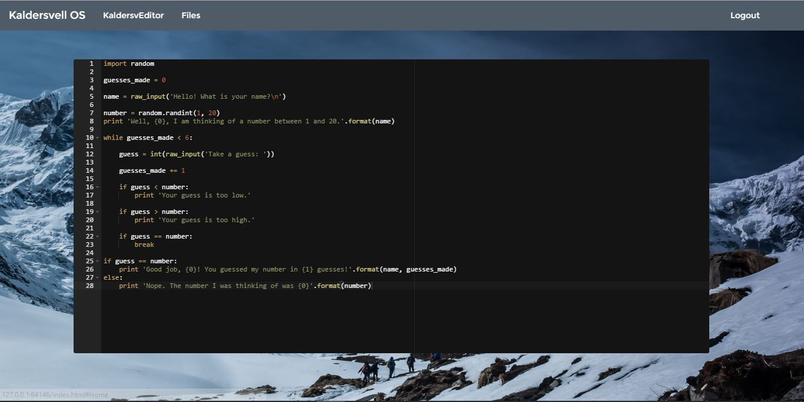

Kaldersvell OS is an Operating System built on the Raspbian platform, designed and optomized for use with Internet of Things technology. Kaldersvell was created by high school students from the Middlesex County Academy for Science, Mathematics, and Engineering Technology in Edison, New Jersey.

Kaldersvell is built to allow beginners to execute their code easily; our OS (which is fed through a web server created by the RasPi) comes with a development environment that allows for a beginner to set their script in action - just with the push of a button.
Kaldersvell is optimized to run even the most complicated scripts and modules with ease; our environment does not discriminate as to whether you wrote a script for a blinking LED or complex server-side methods for all of your IoT devices.
Kaldersvell is versatile, welcoming, and crafted to fit the needs of the world's makers, new and old alike.
Not only is Kaldersvell functionality-abundant, it's also intuitive; our UI is designed to fit user's understanding while also being aesthetically pleasing. Kaldersvell users come for the features, and stay for the appearance.
Feel free to email us to provide feedback, give us suggestions for new functionality, interest in documentation, or to just say hello!